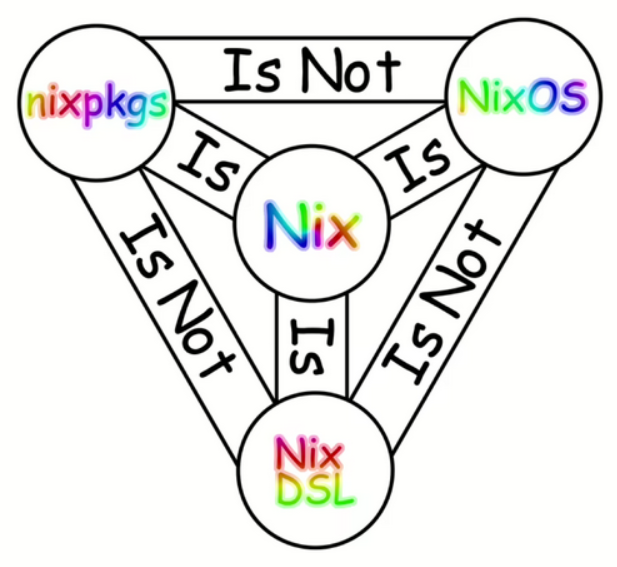
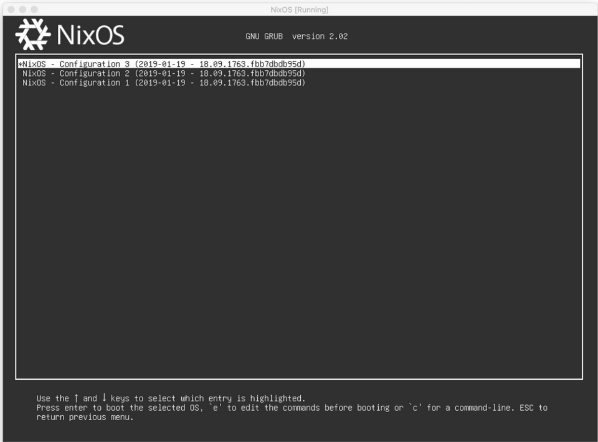

Nix is weird


# hello-docker.nix
{ pkgs ? import { }
, pkgsLinux ? import { system = "x86_64-linux"; }
}:
pkgs.dockerTools.buildImage {
name = "hello-docker";
config = {
Cmd = [ "${pkgsLinux.hello}/bin/hello" ];
};
}
❯ nix-build hello-docker.nix
/nix/store/9ka9lv0ygw3rznd59air8maycvizmgxm-docker-image-hello-docker.tar.gz
❯ ll result
lrwxrwxrwx - jga 21 Aug 20:29 result -> /nix/store/9ka9lv0ygw3rznd59air8maycvizmgxm-docker-image-hello-docker.tar.gz
❯ docker load < result
71c03a03fc54: Loading layer [==================================================>] 33.47MB/33.47MB
Loaded image: hello-docker:9ka9lv0ygw3rznd59air8maycvizmgxm
❯ docker images
REPOSITORY TAG IMAGE ID CREATED SIZE
hello-docker 9ka9lv0ygw3rznd59air8maycvizmgxm aeaf82e5927f 54 years ago 32.6MB
# ./flake.nix
{
description = "Simple tex-env with pre-commit";
inputs = { nixpkgs.url = "github:NixOS/nixpkgs/nixos-unstable"; };
outputs = { self, nixpkgs }:
let
forAllSystems = function:
nixpkgs.lib.genAttrs [ "x86_64-linux" ]
(system: function nixpkgs.legacyPackages.${system});
generalPackages = pkgs: with pkgs; [
reveal-md
marksman
nodejs
];
in {
devShells = forAllSystems (pkgs: {
default = pkgs.mkShell {
packages = (generalPackages pkgs);
shellHook = ''
echo "Welcome to the ❄️nix❄️ shell!"
if [ ! -d reveal.js ]; then
echo "Cloning reveal.js repository..."
git clone https://github.com/hakimel/reveal.js.git
fi
cd reveal.js
if [ ! -d node_modules ]; then
echo "Installing reveal.js dependencies..."
npm install
fi
'';
};
});
};
}